Abstract
A face morph is not just a fade between two images. If the eyes, nose, mouth, and chin are not geometrically aligned, a cross-dissolve produces ghosting. This work combines shape interpolation with appearance interpolation so that both geometry and color move smoothly between faces.
The same machinery is then applied to a population face dataset. By averaging landmarks and appearances, I estimate a mean face, warp examples into that mean geometry, and extrapolate away from the mean to produce caricatures.
Correspondences and Triangulation
The morph begins with corresponding landmark points on two faces. Let P=\pi\ be landmarks on image A and Q=\qi\ be landmarks on image B. For an interpolation parameter t, the intermediate shape is:
I compute Delaunay triangulation on the average landmark shape, then reuse that triangle connectivity for both faces. Triangulating the average shape avoids favoring one face's geometry over the other and reduces skinny triangles.
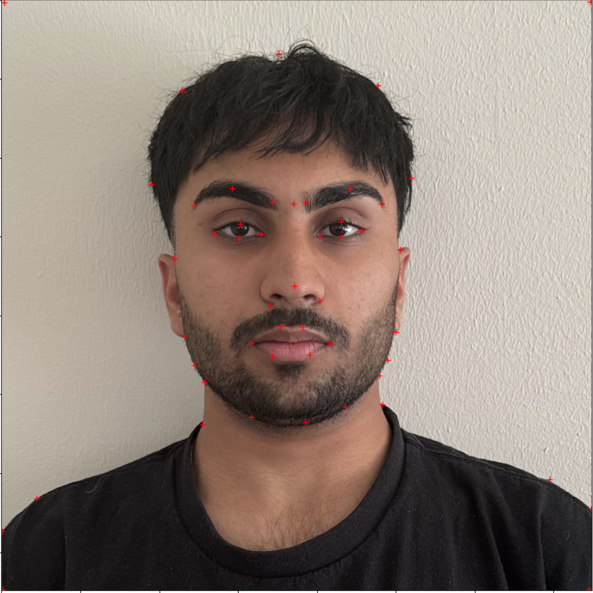
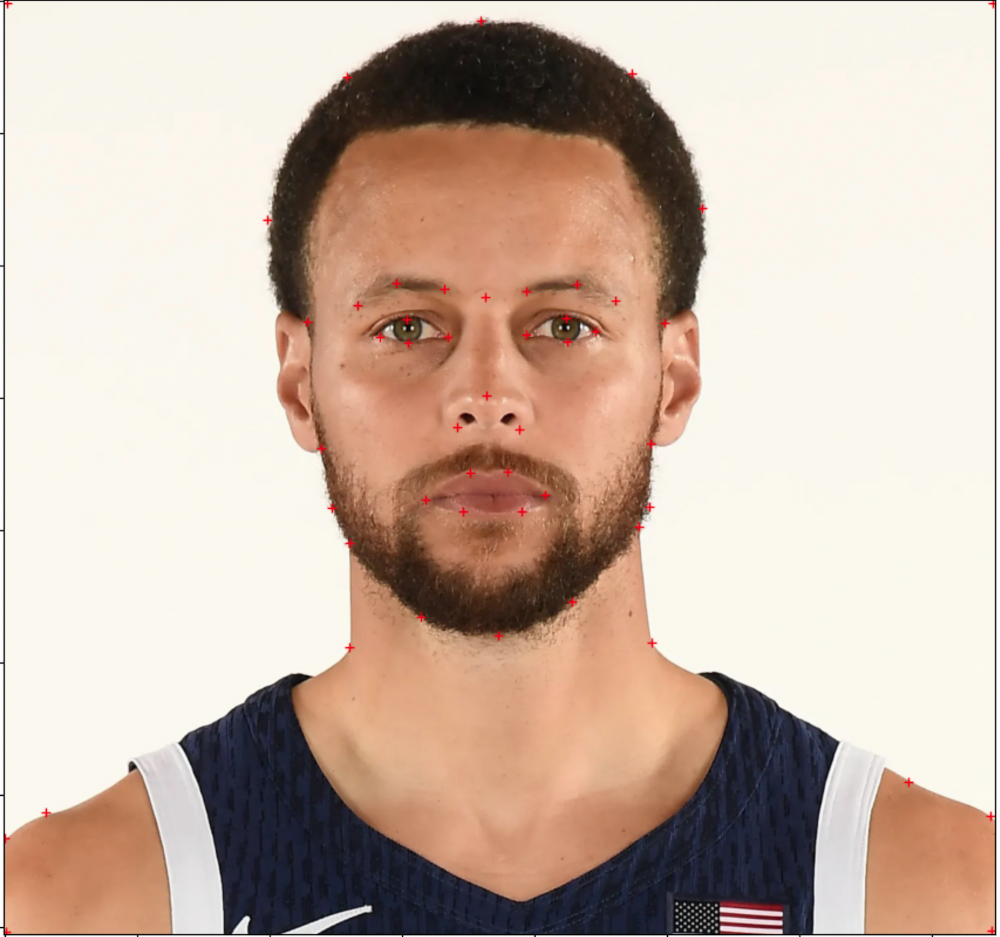
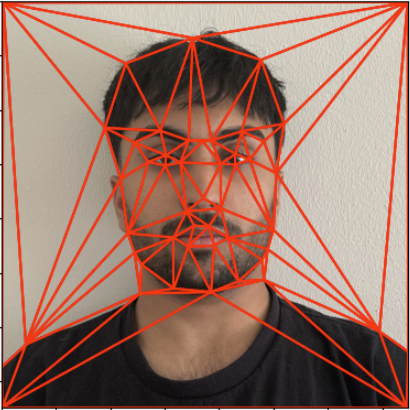
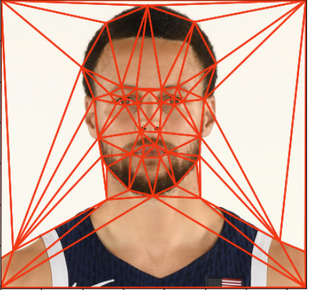
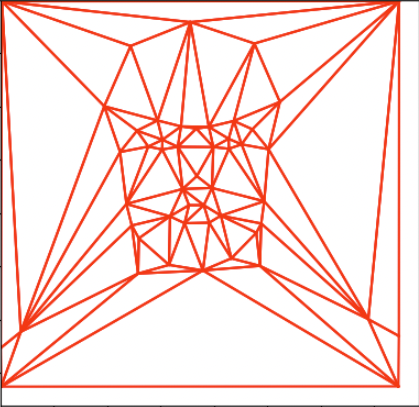
Affine Triangle Warping
Each triangle in the intermediate shape defines a local affine warp from the source triangle. If a source triangle has coordinates x and the target triangle has coordinates x', the affine transform satisfies:
For every triangle, I compute the inverse affine transform from the target triangle back into the source image, sample pixels inside the triangular mask, and use interpolation to fill the warped image. Both source faces are warped into St, then their colors are blended:
.jpg)
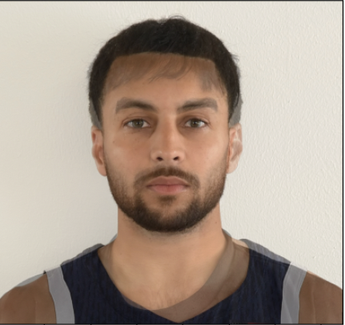
.jpg)
Population-Average Face
For the population model, I used the FEI face database with provided landmarks on neutral faces. I added corner points so the image boundary would warp more stably, averaged all landmark coordinates, and warped every face into that mean geometry. Averaging the warped appearances produced the population-average face.
The examples below show individual faces warped into the mean geometry. Because the dataset landmarks do not describe ears well, ear regions are less stable in some personal-to-average warps.
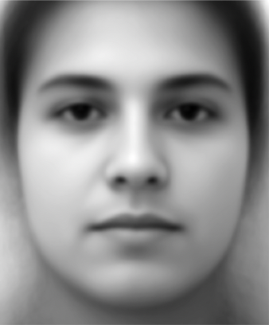
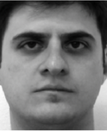
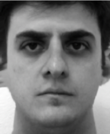
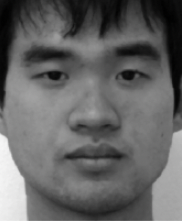
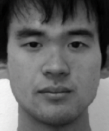
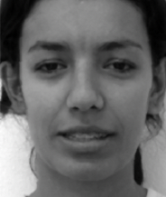
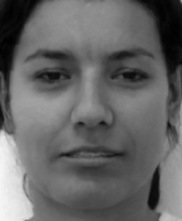
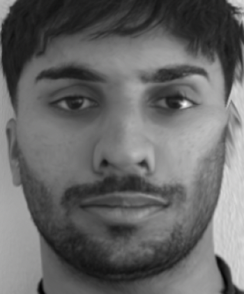
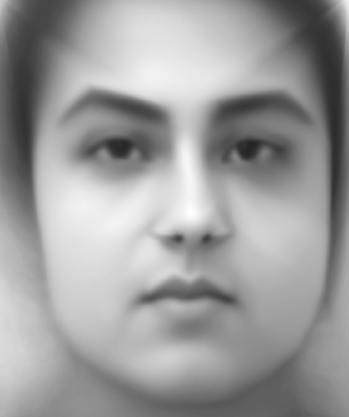
Caricature and Attribute Morphing
Caricatures extrapolate beyond the mean rather than interpolating toward it. If p is my face geometry and p̄ is the population mean, an extrapolated geometry can be written as:
Negative and positive values change the geometry in different directions, making the face narrower, wider, or otherwise exaggerated depending on the landmark displacement. I also explored a shape-and-appearance morph to a reference average face, separating geometry morphing from appearance cross-dissolve before combining them.
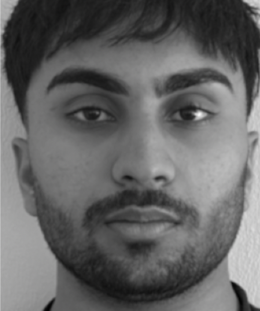
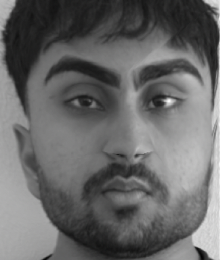
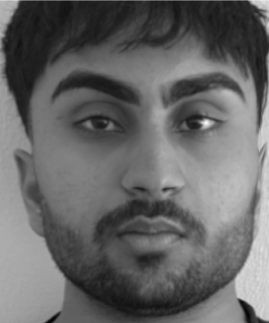
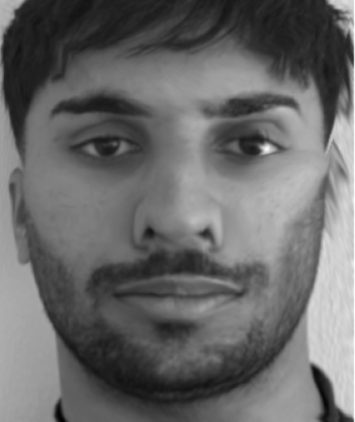
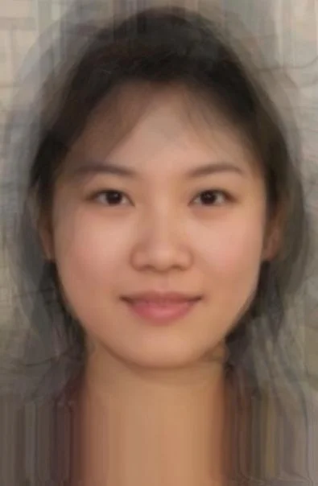
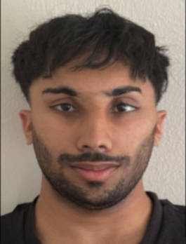
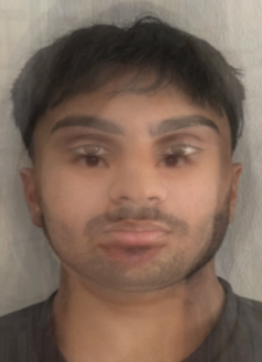
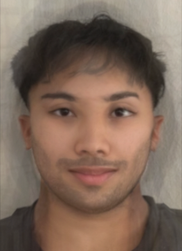
Additional Implementation Notes
The triangle-wise warp is implemented with inverse mapping rather than forward splatting. Forward mapping sends each source pixel into the target image, but it can leave holes because not every target pixel is guaranteed to receive a value. Inverse mapping iterates over every target pixel inside a triangle, maps that pixel back into the corresponding source triangle, and samples the source image. This produces a dense target image and makes interpolation easier to control.
The affine transform for each triangle is computed from three point correspondences. If the source triangle vertices are placed into a matrix and the destination triangle vertices are placed into another matrix, the local transform can be solved exactly because an affine map has six degrees of freedom and three 2D correspondences provide six scalar equations. Repeating that process for every triangle produces a piecewise-affine approximation to a smooth facial deformation.
The morph sequence uses two parameters that can be tied together or varied separately: warp fraction and dissolve fraction. The warp fraction controls the geometry of the intermediate face, while the dissolve fraction controls how much color comes from each source. Setting them equal creates a natural transition, but separating them is useful for analysis because it reveals whether a visual change is caused by shape or appearance.
The population-average experiment is sensitive to dataset structure. The FEI landmarks provide consistent facial correspondences, which makes averaging meaningful, but they also constrain what can be represented. Regions without landmarks are governed by nearby triangles and therefore may smear or stretch. Adding image-corner points helped stabilize the boundary, but a denser landmark set around ears, hairline, and shoulders would better preserve those regions.
The caricature experiment is best understood geometrically. The vector from the average face to my face describes how my landmark configuration differs from the population mean. Moving farther along that vector exaggerates those differences, while moving in the opposite direction suppresses them. Because the transformation is applied to landmark geometry before image sampling, the exaggeration changes shape without needing a separate drawing or stylization model.
Technical Takeaways and Future Work
The main lesson is that morphing quality is dominated by correspondences. Smooth interpolation and good blending cannot compensate for missing landmarks around important geometry. Adding boundary points also matters because triangle warps otherwise behave poorly near image edges.
Future work would use automatic landmark detection, denser landmarks around hair and ears, and a more careful interpolation strategy for video-quality morph sequences.